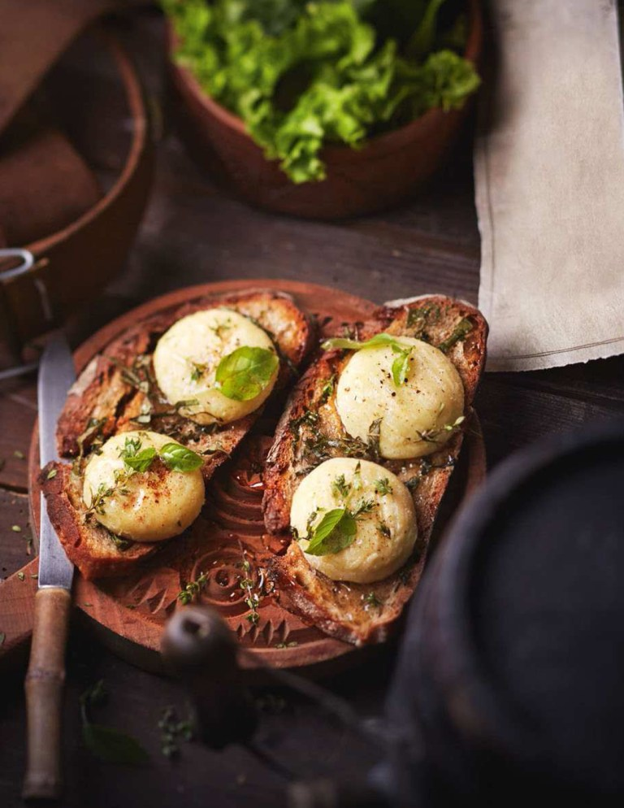

Odin Recipes: Beorn's Goat Cheese Toast!

Listing of Ingredients
- 4 small or 2 large goat cheese logs
- Salt and Pepper
- 1 pinch freshly grated nutmeg
- 4 slices of bread
- 1 handful fresh herbs(basil,marjoram,thyme)
- 4 T honey
- 1 seasonal lettuce
Preperation Steps
- Using a very sharp blade, cut each small cheese in half lengthwwise, or each large cheese into slices 1/2 inch thick.
- Season with salt and pepper, sprinkle lightly with nutmeg, and lay the pieces of cheese on the bread slices.
- Brab your herbs, rinse, drain, and chop them finely. Sprinke the slices with fresh herbs and then drizzle with honey.
- Place them under a broiler for about 5 minutes, until the cheese melts, the honey caramelizes, and the bread becomes crusty. Serve with seasonal salad.
Odin Recipes
Goat Cheese Toast
Red Dragon Inn Fiery Broth